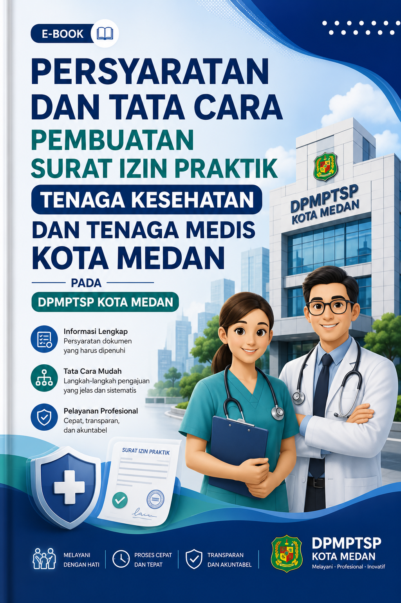

Sistem Informasi Pelayanan Perizinan Terpadu Satu Pintu

E-book digital ini dirancang khusus untuk memuat informasi komprehensif mengenai Standar Operasional Prosedur (SOP) serta regulasi persyaratan perizinan resmi bagi tenaga medis dan tenaga kesehatan yang berpraktik di wilayah administratif Kota Medan.
🎥 Video Tutorial Panduan:
Berdasarkan keputusan dan ketetapan teknis pelayanan, terdapat 2 (dua) klaster jenis perizinan utama tenaga kesehatan yang diatur dalam ketetapan SOP:
Surat Izin Praktik legalitas operasional utama dokter, perawat, bidan, dan tenaga medis lain untuk memberikan layanan kesehatan langsung.
Prosedur resmi penutupan atau penarikan berkas izin praktik karena perpindahan domisili faskes tugas atau selesai masa kontrak kerja.
Surat Izin Praktik (SIP) dipersyaratkan mutlak secara hukum bagi tenaga medis agar memiliki hak kewenangan klinis penuh dalam melakukan tindakan medis operasional sesuai kompetensi masing-masing profesi.
Dihitung sejak seluruh dokumen administrasi digital diunggah secara lengkap, valid, dan terverifikasi oleh tim teknis.
Prosedur penutupan hak administrasi praktik wajib dilakukan oleh nakes demi menjaga akurasi sebaran kuota pelayanan kesehatan.
Berkas Persyaratan Pencabutan: